![Figure 1: Overview of 3D World Simulator. We introduce an action-conditioned, multimodal 3D world modeling framework that operates in a unified 3D representation space, jointly predicting 3D geometry (middle), multi-view consistent RGB and depth from novel views (upper left), and spatially aligned tactile signals (bottom left). 3D World Simulator is applicable to a diverse set of tasks, supporting interactive, long horizon data generation at 50 Hz for policy training and evaluation. Project Page: https://jwang771.github.io/3dworldsimulator/.](fig1.png)
HTML version made by Claude (claude-opus-5-5) from the PDF; check the PDF for exact wording and figures.
Jimmy Wang1,2 Yifan Chou3 Kaifeng Zhang1 Yixuan Wang4 Binghao Huang1 Tao Yu5 Saleh Nabi5 Yunzhu Li1
1Columbia University 2UC Berkeley 3University of Michigan 4NVIDIA 5Analog Devices
Predicting how the world evolves in response to robot actions is central to policy learning, evaluation, and planning. However, many action-conditioned world models predict future observations in 2D image or video space without explicitly modeling the underlying 3D scene, making spatial consistency across viewpoints and over long-horizon interactions challenging. We introduce 3D World Simulator, an action-conditioned multimodal world modeling framework that jointly predicts appearance, geometry, and tactile observations from a unified 3D representation. Our approach combines a hybrid particle-voxel autoencoder that compresses point clouds into compact 3D voxel latents with an action-conditioned latent dynamics model that predicts their evolution. The shared 3D representation supports geometrically consistent rendering from arbitrary viewpoints and flexible integration of spatially aligned tactile signals. Our experiments demonstrate interactive, long-horizon, multimodal prediction at 50 Hz. We then show how our model enables scalable data generation for policy training and evaluation using tactile and multi-view visual observations, including wrist-mounted and novel camera views. Furthermore, we scale our method to large datasets containing diverse objects and demonstrate model-based planning with unseen objects and robot configurations. Together, these results highlight the potential of hybrid particle-voxel dynamics as a foundation for multimodal 3D world simulation.
Predicting how the 3D world evolves in response to interaction is a fundamental capability for intelligent robotic systems, with applications to data generation for policy training (Wang et al., 2026), policy evaluation (Guo et al., 2026b), model-based planning (Huang et al., 2026b), and as backbones for world-action modeling (NVIDIA et al., 2025). Existing action-conditioned world models are predominantly built using 2D video generation backbones. While able to produce photorealistic predictions, these models do not explicitly represent the underlying 3D scene, making it difficult to maintain spatial consistency across viewpoints and to model the precise spatial relationship between contact and geometry. Prior work has explored using 3D representations (Huang et al., 2026b; Zhang et al., 2024b), but these methods typically rely on strong structural assumptions, such as object-specific state representations or explicit correspondences, that can be unreliable in complex interactions and limit broader applicability.
In this work, we present 3D World Simulator, an action-conditioned multimodal world modeling framework that predicts in a unified 3D representation space, providing a common interface capable of generating 3D particles, spatially aligned tactile signals, and multi-view consistent renderings from novel viewpoints. Our model supports interactive, long horizon, multimodal 3D video prediction at 50 Hz, and generalizes to diverse objects and environments when trained at scale.
3D World Simulator consists of two technical components. (1) Hybrid particle-voxel autoencoder. The encoder takes point clouds obtained directly from RGB-D video and compresses them into a compact 3D voxel latent. The decoder progressively upsamples this latent into higher-resolution voxels and then dense 3D particles in a coarse-to-fine manner. Each particle parameterizes a 3D Gaussian that can be rasterized from arbitrary viewpoints (Kerbl et al., 2023), while tactile signals are represented directly as 3D particles within the same output space (Huang et al., 2024; 2025a). (2) 3D latent dynamics model. We learn an action-conditioned dynamics model that predicts the next 3D voxel latent directly. Because this latent encodes the scene as a whole, the dynamics model does not rely on object-specific state representations or explicit correspondences.
A key advantage of our inherently 3D world model is that a single predicted scene state creates a common interface for multiple concurrent capabilities. Since appearance is grounded in a shared 3D Gaussian representation, our model can (1) produce geometrically and multi-view consistent renderings, including from novel and dynamic wrist-mounted camera viewpoints. The same spatial representation provides a (2) flexible and principled way of incorporating multimodal signals. Tactile predictions can be represented directly as 3D particles, remaining geometrically aligned with contacted surfaces. The shared 3D representation also makes our predictions (3) composable with existing 3D assets, including various static backgrounds, objects, and kinematic robot models, enabling additional controllability over the simulated observations from our model.
The 3D World Simulator enables several important downstream applications. We demonstrate interactive, long-horizon, multimodal 3D video prediction across a diverse set of six tasks involving rigid, articulated, and deformable objects, outperforming state of the art 2D video and 3D baselines. Next, 3D World Simulator enables policy training and evaluation, generating synthetic data to train imitation learning policies that rely on visuo-tactile observations, as well as multi-view observations including novel and wrist-mounted camera views. Our model can further be used to evaluate policies, demonstrating strong correlation with real evaluations. Furthermore, 3D World Simulator is scalable to diverse objects. We train 3D World Simulator on the large-scale Deform360 (Li et al., 2026a) dataset, a large-scale multi-view visuo-tactile dataset. Our method outperforms state-of-the-art 3D baselines and can be used for zero-shot model-based planning on unseen objects and robot arms.
In summary, our main contributions are: (1) 3D World Simulator, a general action-conditioned multimodal world modeling framework for interactive, long horizon 3D video prediction, (2) hybrid particle-voxel dynamics in a unified 3D representation space, enabling view consistency and flexible integration of multimodal signals, and (3) a unified model that enables a range of applications, including policy training, policy evaluation, and planning.
2D Action-Conditioned Video Model. Existing 2D action-conditioned video models can predict photorealistic futures (Yang et al., 2023; NVIDIA et al., 2025; Wu et al., 2024b; Jiang et al., 2025b; Agarwal et al., 2026; Liao et al., 2026). They have shown promising results in robotic manipulation applications such as data generation (Wang et al., 2026; Gao et al., 2026), policy evaluation (Guo et al., 2026b; Quevedo et al., 2026; Li et al., 2026b; Huang et al., 2025b; Team et al., 2025), planning Zhou et al. (2024); Liang et al. (2024); Chen et al. (2025); Hafner et al. (2025a;b); Du et al. (2023); Assran et al. (2025), action prediction (Cheang et al., 2024; Jang et al., 2025; Hu et al., 2025; Guo et al., 2024; Wu et al., 2024a; Bharadhwaj et al., 2025), policy steering Wu et al. (2025); Jain et al. (2026), and policy improvement (Yin et al., 2026; Guo et al., 2026a). However, they do not explicitly represent the 3D world, making it difficult to enforce spatial consistency and model complicated object interactions. Among these works, Interactive World Simulator is the most closely related to ours Wang et al. (2026). The authors introduce a task-specific 2D action-conditioned video model that supports interactive, stable, and physically plausible long-horizon simulation. However, it predicts in purely pixel space, making prediction from arbitrary viewpoints and spatial consistency challenging. In contrast, our 3D World Simulator explicitly represents the underlying 3D scene, supporting spatially consistent predictions from novel viewpoint. We show that our model can also accurately model challenging object interactions, including cloth folding and part assembly.
3D Dynamics Models. Many prior works explore modeling object dynamics in the 3D world using various 3D representations, including point cloud (Huang et al., 2026b;a; Bauer et al., 2024), sparse particles (Zhang et al., 2025; Whitney et al., 2024; Huang et al., 2025c; Zhang et al., 2024a; Jiang et al., 2025a; Li et al., 2018), neural radiance fields (Driess et al., 2023), 3D Gaussians (Zhang et al., 2024b; Xie et al., 2024; Shao et al., 2025; Abou-Chakra et al., 2024; Zhang et al., 2024c; Lu et al., 2024; 2025), and 3D mesh (Pfaff et al., 2020). Some of them focus on learning dynamics of specific types of objects, such as elastoplastic objects (Bauer et al., 2024; Shi et al., 2023; 2024), cloth (Lin et al., 2022), fluid (Sanchez-Gonzalez et al., 2020). Among these works, PointWorld and PGND are the closest to ours (Huang et al., 2026b; Zhang et al., 2025). Both train 3D world models in point or particle space and show spatially consistent and physically plausible results. However, both use point tracking to provide training supervision. In contrast, our model does not require point-tracking supervision and is transferable across diverse scenes. In addition, they do not focus on photorealistic 2D image rendering, which is essential for visuomotor policy training and evaluation. Instead, our model supports photorealistic 2D rendering from novel viewpoint, including fixed external cameras and moving wrist cameras, enabling scalable data generation and visuomotor policy evaluation.
Multimodal World Models. Researchers have explored how to incorporate tactile sensing into world models by predicting 2D tactile images alongside 2D visual images (Higuera et al., 2026; Zhang et al., 2026; Huang et al., 2026c; Ma et al., 2026; Wu et al., 2026b; Tian et al., 2019; Lou et al., 2026; Ye et al., 2025; Zang et al., 2026; Yuan et al., 2026; Wu et al., 2026a). In contrast, our model predicts in 3D space with spatial consistency. A closely related work, RoboPack, also models tactile sensing and object interaction dynamics in 3D space to accomplish challenging dense packing tasks (Ai et al., 2024). However, its dynamics model mainly focuses on dense packing tasks and predicts over relatively short horizons.
In this section, we first describe our problem formulation in Section 3.1. Then we will describe how we train our hybrid particle-voxel autoencoder and 3D latent dynamics model respectively in Section 3.2 and Section 3.3. Lastly, we describe how we rollout autoregressively during the inference time in Section 3.5
We denote the input point clouds at time \(t\) as \(P_t \in \mathbb{R}^{7\times n}\), containing \(n\) visual and, when available, tactile points. Each point contains its 3D world coordinates, RGB appearance, and an additional channel reserved for tactile information. Our experiments use the FlexiTac Huang & Li (2026); Huang et al. (2024) tactile sensor, but our method is compatible with various types of sensors. Our goal is to build a model that takes in history point clouds \(P_{t-H:t}\) and action \(a_t\) to predict next \(\hat{P}_{t+1}\) minimizing the difference with ground truth \(P_{t+1}\).
Our model consists of two parts: a hybrid particle-voxel autoencoder and a 3D latent dynamics model. For the autoencoder, the encoder \(E_\theta\) compresses the point cloud \(P_t\) into a compact latent \(z_t\), from which a decoder \(D_\psi\) then reconstructs the point cloud. To model the dynamics, our 3D latent dynamics model \(F_\phi\) takes in latent \(z_t\), last \(H\) history latents \(z_{t-H:t-1}\), as well as the robot action \(a_t\) and then predicts \(\hat{z}_{t+1} = F_\phi(z_{t-H:t}, a_t)\).
![Figure 2: Overview of Model Architecture. (a) We introduce a hybrid particle-voxel autoencoder that compresses an input point cloud into a compact 3D voxel latent. This voxel latent is progressively upsampled into finer voxels, which are then upsampled into dense visual particles and optional tactile particles. Each visual particle is attached to Gaussian parameters that can be rendered at novel viewpoints. (b) Our 3D latent dynamics model then directly operates on voxel latents produced by the autoencoder. Given robot actions, history latents, and a current latent observation, the dynamics model uses 3D convolutions and spatiotemporal attention to autoregressively predict future voxel latents during open-loop rollouts. These latents can then be decoded into point clouds, multi-view renders, and tactile observations.](fig2.png)
Sparse voxel encoder. We first voxelize the input point cloud \(P_t\) onto a sparse 3D voxel grid. We aggregate points by averaging the features of points that fall within each occupied voxel, producing features only at occupied voxel locations. The encoder \(E_\theta\) then applies strided sparse 3D convolutions (Graham et al., 2018) to progressively downsample the voxel input into a compact latent \(z_t\), avoiding unnecessary computation over empty space. We unit-normalize each latent voxel along the channel dimension before passing the representation to the decoder or latent dynamics model.
Coarse-to-fine particle-voxel decoder. As shown in part (a) of Figure 2, the decoder \(D_\psi\) reconstructs the scene from \(z_t\) in two stages, upsampling coarse voxels to dense particles.
(i) Voxel Upsampling: the decoder progressively upsamples \(z_t\) using transposed 3D convolutions until reaching the desired voxel resolution. At each resolution, the decoder predicts scene occupancy, providing progressively finer estimates of the scene structure at each layer.
(ii) Particle Upsampling: to obtain dense 3D particle prediction, we use a lightweight MLP to predict continuous particle positions given each occupied voxel. Each resulting particle predicts its 3D position and the parameters of a 3D Gaussian, including color, scale, rotation, and opacity, enabling rendering from arbitrary viewpoints.
Training Objective. We train the voxel-particle autoencoder end-to-end using the following loss: \(\mathcal{L}_{\text{AE}} = \mathcal{L}_{\text{voxel}} + \mathcal{L}_{\text{particle}} + \mathcal{L}_{\text{render}} + \mathcal{L}_{\text{cons}}\).
(i) Voxel loss \(\mathcal{L}_{\text{voxel}}\). To reconstruct the 3D occupancy, we compare predicted voxel occupancy at each decoder resolution level with the ground truth occupancy and sum the loss across all levels.
(ii) Particle loss \(\mathcal{L}_{\text{particle}}\). To reconstruct accurate particle geometry, we measure the Chamfer distance (CD) (Fan et al., 2017) between predicted particles and ground truth points. Particle color and tactile values are additionally supervised using \(\ell_1\) error on the matched points.
(iii) Render loss \(\mathcal{L}_{\text{render}}\). Given the predicted 3D Gaussians, we render RGB-D images from the training camera viewpoints and supervise them using a combination of \(\ell_1\), SSIM (Wang et al., 2004), and LPIPS (Zhang et al., 2018) losses on RGB and an \(\ell_1\) loss on valid depth pixels.
(iv) Consistency regularization \(\mathcal{L}_{\text{cons}}\). Different subsamples of the same observation can produce inconsistent latent encodings. We therefore encode two independently subsampled point clouds and penalize the \(\ell_2\) difference between their latent representations.
After training the particle-voxel autoencoder, we learn an action-conditioned dynamics model \(F_\phi\) over its 3D latent representation. As shown in part (b) of Figure 2, at time \(t\), given an input latent \(z_t\), a history with \(H\) previous latents \(z_{t-H:t-1}\), as well as a corresponding robot action \(a_t\), the model approximates the next latent state \(z_{t+1}\) by predicting \(\hat{z}_{t+1} = F_\phi(z_{t-H:t}, a_t)\). The predicted latent can then be decoded into 3D geometry, multi-view visual observations, and tactile signals.
We instantiate our dynamics model as a 3D U-Net (Çiçek et al., 2016). We first downsample input latent voxels with 3D convolutional layers and then apply interleaved spatial attention and causal temporal attention (Vaswani et al., 2017; Bertasius et al., 2021). Lastly, the decoder upsamples the predicted latent voxels back to the input latent resolution.
Training Objective. To improve long-horizon inference stability, we predict \(K-\)step latents \(\hat{z}_{t+1:t+k}\) autoregressively during training and supervise latent predictions using a discounted loss,
\[\mathcal{L}_{\text{dyn}} = \frac{1}{K}\sum_{k=1}^{K}\gamma^{k-1}\|\hat{z}_{t+k} - z_{t+k}\|_2^2, \tag{1}\]where \(\gamma\) is the discount factor. For stable training, we use a curriculum that gradually increases \(K\) during training, similar in spirit to scheduled sampling (Bengio et al., 2015). To further improve the long-horizon inference stability, we add randomly sampled Gaussian noise to each history latent during training. More details of model and training specifications are in Appendix B.
The hybrid particle-voxel autoencoder and 3D latent dynamics model takes around 16 hours each on an RTX 5090 GPU.
While our model is limited to a specific workspace, to enable larger scale scene simulation, our model can be composed with various 3D Gaussian assets. By composing the raw autoencoder output with diverse static background made up of 3D Gaussians, we can further simulate various types of scenes. We can further utilize kinematic 3D Gaussian robot models to allow for more complete scene simulation, as robot arms may fall outside the specificied workspace. Although our model does not natively depend on object-specific representations, it can be finetuned to output labels to separate specific scene components like the robot arm, object, and table. Given this separability, we can further insert different robot arms and kinematic models not seen during training, as well as diverse backgrounds.
At inference time, we roll out the world model autoregressively in open loop. Starting from an initial encoded 3D latent \(z_1\), the dynamics model predicts the next 3D latent conditioned on the robot action, and each predicted latent is fed back as input for subsequent steps. Each predicted latent can be decoded into visual and tactile point clouds, as well as 3D Gaussians that can be rendered from arbitrary viewpoints. To render wrist camera views during open-loop rollouts, we fine-tune a prediction head on the decoder.
![Figure 3: Qualitative comparison of open-loop multi-view predictions. (Left) Visualization of 3D World Simulator multi-view renders from open-loop rollouts on the Part Assembly and Cloth Folding task. Our model maintains multi-view consistent predictions with strong visual fidelity. (Right) Comparison between our method and baselines on frame 200 of an open-loop rollout. Other baselines display inconsistent predictions between viewpoints, visual distortions, and object and robot structural inaccuracies.](fig3.png)
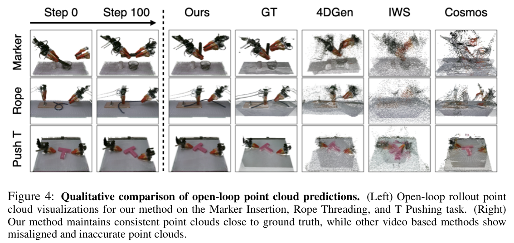
Through our experiments, we aim to address three questions: (1) How does the 3D World Simulator compare to baselines in terms of long-horizon prediction of 3D geometry, multi-view consistent renders and tactile signals? (2) Can the 3D World Simulator be used to train and evaluate imitation learning policies, especially those that utilize wrist-mounted cameras, tactile signals, or multi-view observations? (3) Can the 3D World Simulator scale from individual tasks to diverse objects and interactions when trained on large-scale data, and be used for downstream planning with unseen objects and robot arms?
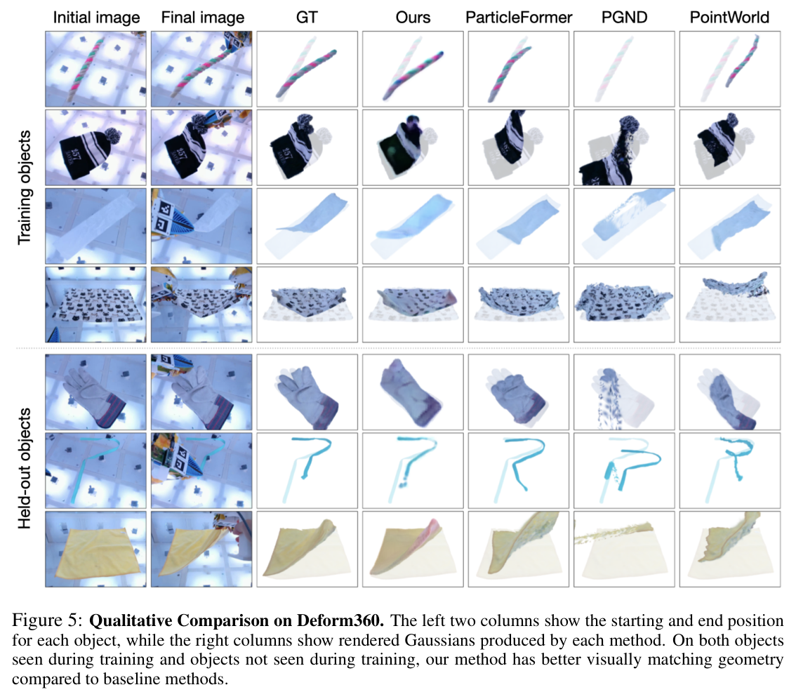
ALOHA Task Setup. We conduct data collection and experimentation using an ALOHA Bimanual Robot (Zhao et al., 2023), paired with FlexiTac (Huang & Li, 2026) tactile sensors on each fingertip. We include six tasks that cover manipulation of deformable, rigid, and articulated objects: Part Assembly, Cloth Folding, T Pushing, Box Packing, Rope Threading, and Marker Insertion. Detailed descriptions and visualizations of each task setup can be found in Appendix C. We collect data via a combination of kinematic devices and keyboard inputs to teleoperate the robot, resulting in around 200 episodes and 2 hours of data for each task.
Deform360 Dataset. To investigate the scalability of 3D World Simulator, we utilize Deform 360 (Li et al., 2026a), a visuo-tactile dataset featuring 198 daily-life objects, 1,980 interaction sequences, and over 215 hours of observations from 41 surround-view cameras and bimanual tactile grippers. Since Deform360 only provides object-centric depth information, we train our world model purely on the object particles unlike the ALOHA setup where we reconstruct the robot and environment surroundings.
Baselines and Metrics. Across the six ALOHA tasks in Section 4.1, we evaluate 3D World Simulator against both 2D Video Prediction and 3D Particle Baselines on metrics across pixel reconstruction (PSNR and LPIPS), depth prediction (Abs Rel, \(\delta < 1.25\) (Eigen et al., 2014)), point cloud reconstruction (Chamfer distance on scene and object points), and tactile signal prediction metrics (L1). We evaluate long horizon prediction by averaging metrics across an open-loop rollout of 200 frames. On the Deform360 dataset, we only compare to 3D particle baselines since per-view scene depth is not contained in the dataset.
| Image | Depth | Geometry | Tactile | |||||
|---|---|---|---|---|---|---|---|---|
| Method | PSNR ↑ | LPIPS ↓ | Abs Rel ↓ | \(\delta < 1.25\) ↑ | CD ↓ | Obj. CD ↓ | L1 ↓ | |
| Video | Cosmos | 18.51 | 0.441 | 0.147 | 0.833 | 12.43 | 16.64 | 0.135 |
| Robot4DGen | 20.59 | 0.340 | 0.172 | 0.790 | 10.43 | 15.97 | 0.128 | |
| IWS | 12.59 | 0.562 | 0.163 | 0.791 | 10.81 | 17.69 | 0.207 | |
| Particle | PGND | – | – | – | – | 17.11 | 25.48 | 0.208 |
| PointWorld | – | – | – | – | 15.32 | 21.74 | 0.148 | |
| ParticleFormer | – | – | – | – | 13.78 | 20.23 | 0.151 | |
| Ours | 23.24 | 0.240 | 0.097 | 0.913 | 7.72 | 11.52 | 0.081 | |
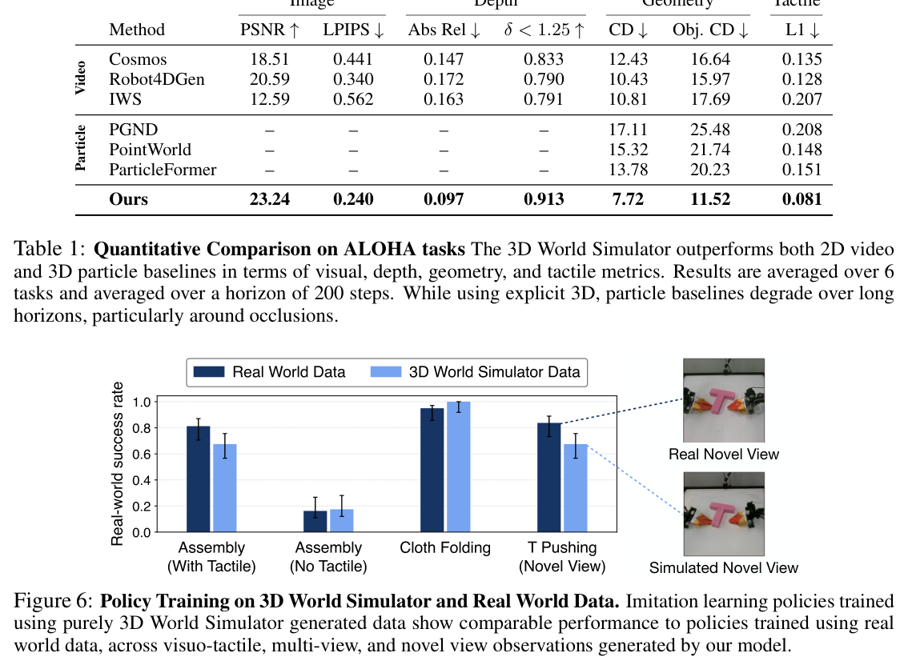
For representative 2D video prediction baselines, we include Robot4DGen (Liu et al., 2026), Cosmos (NVIDIA et al., 2025), and Interactive World Simulator (IWS) (Wang et al., 2026). For representative 3D particle baselines, we include ParticleFormer (Huang et al., 2025c), PointWorld (Huang et al., 2026b), and Particle-Grid Neural Dynamics (PGND) (Zhang et al., 2025).
ALOHA Task Results. Quantitative results in Table 1 show that 3D World Simulator outperforms all 2D and 3D baselines across all metrics, including pixel reconstruction, depth prediction, point cloud reconstruction, and tactile signal prediction. Qualitative results in Figure 3 show that 3D World Simulator produces multi-view consistent renders over long horizons, while other 2D video prediction baselines show inconsistency between views, inaccurate dynamics, and accumulated artifacts. Qualitative point cloud reconstructions in Figure 4 show that baseline predictions yield inconsistent point clouds.
Deform360 Results. Table 2 shows that 3D World Simulator outperforms 3D particle baselines in terms of image and geometry metrics on objects seen during training. On objects held-out during training, 3D World Simulator produces better geometric predictions but has worse results on image metrics. This discrepancy can be explained by the fact that the particle baselines output point tracks on prefitted Gaussian Splats, while ours generates appearance from scratch. Qualitative results on the Deform360 dataset in Figure 5 show that our method is able to generate realistic dynamics and appearance on both seen object and held-out during training.
We further evaluate whether 3D World Simulator can act as a scalable data generator, particularly for policies that rely on wrist-mounted cameras, tactile signals, or novel views not captured by the cameras during data collection. We evaluate four imitation learning policies: ACT (Zhao et al., 2023), Diffusion Policy (DP) (Chi et al., 2023), \(\pi_{0.5}\) (Black et al., 2025), and Cosmos Policy (Kim et al., 2026). We consider three tasks: Part Assembly, Cloth Folding, and T-Pushing. For each task, we collect 100 demonstrations in the real world and in 3D World Simulator as well. We report the mean success rate across the four policy architectures. Detailed descriptions, visualizations, and evaluation criteria are described in Appendix D. Each task isolates a different capability of the simulator. Part Assembly evaluates visuo-tactile policy training, T-Pushing evaluates policy learning from novel viewpoints, and Cloth Folding evaluates multi-view consistency using front and wrist-mounted camera observations. As shown in Figure 6, Part Assembly policies trained on simulated visuo-tactile data achieve performance comparable to those trained on real data and substantially outperform vision-only policies trained on real data, showing the utility of tactile signals generated by our model. Furthermore, Cloth Folding and T-Pushing results indicate the utility of our simulator for multi-view and novel view observations.
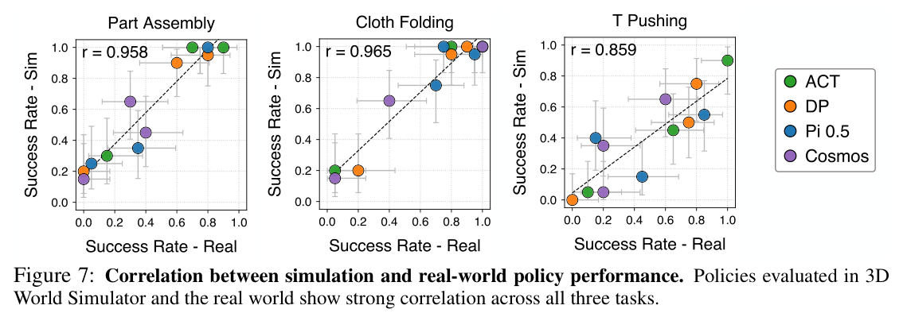
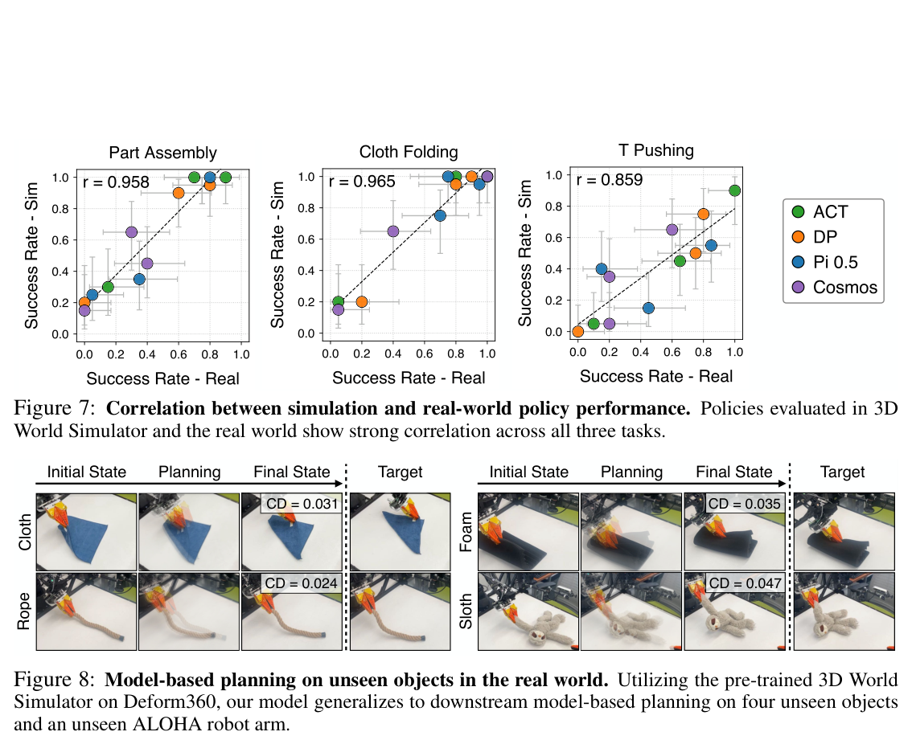
To evaluate whether 3D World Simulator can serve as a faithful proxy for real-world policy evaluation, we examine whether imitation policies show positive correlation when evaluated within our simulator and the real world. We train four imitation learning policies: ACT, DP, \(\pi_{0.5}\), and Cosmos Policy, and we utilize the same three tasks from policy training in Section 4.3, Part Assembly, Cloth Folding, and T-Pushing. We sample 20 initial configurations for each task. Figure 7 shows that across all three tasks and four policies, real-world policy performance is highly correlated with performance in the 3D World Simulator. The \(x\)-axis denotes the real-world success rate while the \(y\)-axis denotes the success rate within the world simulator. Each point corresponds to a policy checkpoint at a different training step, while colors denote the policy architecture. Error bars are indicated through Clopper-Pearson confidence intervals, obtained through 20 evaluations per policy both in simulation and the real world.
We utilize our pre-trained model on the large-scale Deform360 dataset for downstream model-based planning. We utilize an unseen ALOHA single-arm setup with four unseen objects: cloth, rope, foam, and sloth. We utilize Model Predictive Control, using an off-the-shelf implementation of MPPI (Williams et al., 2017) from PGND (Zhang et al., 2025). Figure 8 shows qualitatively and quantitatively that our pre-trained 3D World Simulator can achieve zero-shot planning results.
In this work, we introduced 3D World Simulator, an action-conditioned multimodal world modeling framework that predicts in a unified 3D representation space, creating a common interface to generate 3D particles, multi-view consistent rendered RGB, and tactile predictions. Our unified model enables a range of applications. 3D World Simulator enables the generation of policy training data for visuo-tactile policies, as well as policies that rely on multi-view, novel view, and wrist-mounted camera view observations. We can further evaluate these policies using our model, demonstrating strong correlation between simulation and real world rollouts. When scaled to large scale datasets, 3D World Simulator enables downstream model-based planning on unseen objects and robot configurations. In future work, we plan to extend 3D World Simulator to more diverse and challenging environments, extending its general applicability. Additionally, we further aim to extend 3D World Simulator to larger scale scenes involving multi-room environments and mobile manipulation, enabling increased real world applications.
This work was partially supported by Analog Devices, the Toyota Research Institute, and NSF Award #2409661. This article solely reflects the opinions and conclusions of its authors and should not be interpreted as necessarily representing the official policies, either expressed or implied, of the sponsors.
In this section, we provide further experimental details for our method.
| Training objects | Held-out objects | ||||||
|---|---|---|---|---|---|---|---|
| Method | PSNR ↑ | LPIPS ↓ | CD (mm) ↓ | PSNR ↑ | LPIPS ↓ | CD (mm) ↓ | |
| Particle | PGND | 14.9 | 0.41 | 18.6 | 12.3 | 0.50 | 25.2 |
| PointWorld | 16.8 | 0.34 | 12.4 | 15.0 | 0.58 | 14.5 | |
| ParticleFormer | 18.0 | 0.30 | 10.5 | 15.6 | 0.31 | 13.4 | |
| Ours | 18.6 | 0.26 | 9.6 | 14.8 | 0.43 | 12.1 | |
We describe the autoencoder and dynamics model details for both ALOHA datasets and the Deform360 dataset.
Representation. ALOHA observations represent the cropped manipulation workspace, including robot, object, and tactile observations when available. Deform360 observations represent the object point cloud. All positions are expressed in a common coordinate frame before voxelization.
The encoder produces an eight-channel latent grid for both ALOHA and Deform360 datasets.
| Setting | ALOHA | Deform360 |
|---|---|---|
| Latent grid \((X,Y,Z)\) | \(32\times16\times32\) | \(32\times32\times32\) |
| Latent channels | 8 | 8 |
| Workspace extent \((X,Y,Z)\), metres | \(0.52\times0.32\times0.28\) | \(0.515\times0.525\times0.38\) |
| Sparse encoder widths | 8, 16, 32, 64 | 8, 16, 32, 64 |
| Voxel decoder widths | 256, 128, 64 | 320, 160, 80 |
| Particle-head hidden width | 64 | 64 |
| Particle refinement stages | 2 | 2 |
| Gaussian scales | Anisotropic | Anisotropic |
| Spherical-harmonic degree | 1 | 1 |
| Tactile supervision | Enabled | Disabled |
| Maximum input points | 300,000 | 50,000 |
| Batch size per process | 1 | 1 |
| Initial learning rate | \(2\times10^{-4}\) | \(2\times10^{-4}\) |
| Minimum learning rate | \(10^{-5}\) | \(10^{-5}\) |
| Weight decay | \(10^{-4}\) | \(10^{-4}\) |
| Latent noise standard deviation | 0.1 | 0.1 |
| Consistency coefficient | 100 | 100 |
| KL regularization | Disabled | Disabled |
Decoder. The voxel decoder predicts occupancy at three resolutions and color at the finest resolution. Occupied voxels seed two successive particle-refinement stages. The particle head predicts continuous positions and Gaussian rendering attributes, mainly anisotropic Gaussians and degree-one spherical harmonics.
Voxel supervision. We supervise occupancy using binary cross-entropy at each decoder resolution. Voxel RGB is supervised with an \(\ell_1\) loss at occupied cells, which includes tactile particles and visual particles.
Thus,
\[\mathcal{L}_{\text{voxel}} = \sum_{\ell}\lambda_{\text{occ},\ell}\mathcal{L}^{(\ell)}_{\text{BCE}} \tag{2}\]For tactile observations, we additionally supervise tactile occupancy with binary cross-entropy and tactile signal values with an \(\ell_1\) loss at tactile-occupied cells. The tactile terms are omitted when tactile supervision is unavailable. Spatial weighting emphasizes object and contact regions.
Particle supervision. For each occupied seed voxel, let \(\hat{P}\) denote its predicted particles and \(P\) the ground-truth points in its local voxel neighborhood. We use the local bidirectional Chamfer distance
\[\mathcal{L}_{\text{CD}} = \frac{1}{|\hat{P}|}\sum_{\hat{p}\in\hat{P}}\min_{p\in P}\|\hat{p}-p\|_2 + \frac{1}{|P|}\sum_{p\in P}\min_{\hat{p}\in\hat{P}}\|p-\hat{p}\|_2. \tag{3}\]We average this objective over valid seed neighborhoods and apply it at both particle-refinement stages. Neighborhoods without ground-truth support are excluded from this local matching term.
For color supervision, ground-truth points are assigned to their nearest predicted particle within the neighborhood. The mean color of the assigned points serves as an \(\ell_1\) target for that particle. The combined particle objective is
\[\mathcal{L}_{\text{particle}} = \sum_r\left(\mathcal{L}^{(r)}_{\text{CD}} + \mathcal{L}^{(r)}_{\text{rgb}}\right). \tag{4}\]Rendering supervision. For a training camera \(j\), the predicted Gaussians produce an RGB image \(\hat{I}_j\), depth \(\hat{D}_j\), and opacity. Rendering supervision is
\[\mathcal{L}_{\text{render}} = \lambda_{\text{RGB}}\left(\mathcal{L}^{\text{RGB}}_1 + \lambda_{\text{SSIM}}\mathcal{L}_{\text{SSIM}} + \mathcal{L}_{\text{LPIPS}}\right) + \mathcal{L}^{\text{Depth}}_1 \tag{5}\]where
\[\mathcal{L}_{\text{SSIM}} = \frac{1-\text{SSIM}(\hat{I}_j, I_j)}{2}, \tag{6}\]The image losses are aggregated over supervised camera views. We use \(\lambda_{\text{RGB}} = 4\), \(\lambda_{\text{SSIM}} = 0.5\).
Subsampling consistency. Two independently sampled point clouds from the same observation are encoded with shared weights. We minimize
\[\mathcal{L}_{\text{cons}} = \frac{1}{c|\Omega_t|}\sum_{v\in\Omega_t}\left\|E_\theta(P^{(1)}_t)(v) - E_\theta(P^{(2)}_t)(v)\right\|_2^2, \tag{7}\]where \(\Omega_t\) contains occupied latent cells. When color augmentation is used, both subsamples receive the same color transformation, so consistency does not encourage invariance to object appearance.
Training stages. The reference recipe first trains the voxel autoencoder for 10 epochs. During the following 10 epochs, the voxel autoencoder is frozen while the particle and rendering heads are trained. Subsequent training jointly optimizes the autoencoder and particle heads.
Per-frame spatial encoder. Let the observed history contain \(H\) latent grids, including the most recent observation: \(z_{t-H+1},\ldots,z_t\). A shared 3D convolutional encoder processes each frame independently, preserving an explicit temporal dimension. Two spatial downsampling stages produce features at one-half and one-quarter of the latent-grid resolution.
Action conditioning. Each observed frame is paired with its corresponding robot state or action descriptor. A future query slot is conditioned on the action for the requested prediction. An MLP embeds the action, relative timestamp, and history-noise level, and injects this conditioning into the feature blocks.
For Deform360, the action descriptor contains each gripper's 3D position, 6D orientation representation (Zhou et al., 2019), opening, and presence indicator. Positions and orientations are expressed in the same frame as the object latent. For ALOHA, the corresponding descriptor is obtained from the robot kinematics and gripper state.
Optionally, we concatenate four spatial action channels to each frame: a position heatmap and an opening-modulated heatmap for each gripper. The future query receives the target action's spatial channels. Missing grippers produce zero-valued spatial channels.
Factorized spatial–temporal attention. At the coarsest resolution, the model alternates spatial and temporal attention. Spatial attention operates over all coarse voxels within each frame:
\[\bar{h}_\tau = h_\tau + \text{SA}(\text{LN}(h_\tau)). \tag{8}\]Temporal attention then operates across frame slots at each coarse spatial location:
\[h'_{\tau,v} = \bar{h}_{\tau,v} + \text{TA}_{\text{causal}}\big(\text{LN}(\bar{h}_{\le\tau,v})\big). \tag{9}\]Each attention block includes a residual feed-forward network. Spatial positions and temporal offsets are encoded explicitly. The future query may attend to all observed frames but never to future ground-truth latent features.
For a \(32^3\) latent, attention is applied to \(8^3 = 512\) spatial tokens per frame. This avoids attention over all \(32^3\) fine-grid positions. For the ALOHA grid, the corresponding coarse grid is \(8\times4\times8\).
Decoder and skip connections. A shared 3D decoder upsamples the attention features back to the original latent resolution. The predicted future slot uses skip features from the most recent available history frame. During open-loop prediction, this frame may itself be a previous model prediction. No future ground-truth features are used in the skip paths. The output is a direct latent prediction and requires one network evaluation per predicted step.
| Setting | ALOHA | Deform360 |
|---|---|---|
| Latent grid | \(32\times16\times32\) | \(32^3\) |
| Latent channels | 8 | 8 |
| History frames | 5 | 5 |
| Encoder widths | 128, 256, 512 | 128, 256, 512 |
| Convolution kernel | \(3^3\) | \(3^3\) |
| Spatial downsampling stages | 2 | 2 |
| Attention grid | \(8\times4\times8\) | \(8^3\) |
| Spatial–temporal block pairs | 4 | 4 |
| Attention heads | 8 | 8 |
| Attention head dimension | 64 | 64 |
| Feed-forward expansion | 2 | 2 |
| Action embedding dimension | 512 | 512 |
| Predictions per forward pass | 1 | 1 |
| Optimizer | AdamW | AdamW |
| Weight decay | \(10^{-4}\) | \(10^{-4}\) |
| Gradient clipping | 10 | 10 |
| Maximum history-noise std. | 0.4 | 0.4 |
| Rollout discount \(\gamma\) | 0.95 | 0.95 |
Autoregressive training. We precompute latent sequences using the frozen autoencoder. Each training example begins with observed history. The model predicts one future latent, appends it to the history, removes the oldest history frame, and repeats. Ground-truth future latents are used only as loss targets.
We use \(K\) to denote the number of supervised predictions, so \(K = 1\) corresponds to next-frame-only training. This avoids ambiguity with implementations that count only the additional feedback steps. We use a rollout discount of \(\gamma = 0.95\) for the supervised latent predictions, as defined in Section 3.3.
For each history frame, we sample \(\sigma_\tau \sim \mathcal{U}(0, \sigma_{\max})\) and use
\[\tilde{z}_\tau = z_\tau + \sigma_\tau\epsilon_\tau, \qquad \epsilon_\tau \sim \mathcal{N}(0, I). \tag{10}\]The network receives \(\sigma_\tau\) as conditioning.
Task Descriptions
Part Assembly: The left robot arm grasps the socket while the right arm grasps the plug in various starting positions. The task involves reorienting the plug by the right arm pressing down on the socket, then lifting to insert into the socket.
Cloth Folding: The left robot arm starts by grasping the top left edge of the cloth and lifting it such that the top edge of the cloth straightens. The right robot arm slides its hand across this edge to unfurl the cloth. Then both arms are used to fold the cloth.
T Pushing: Both robot grippers are closed and constrained to the table plane. They are used to push the T block into various positions.
Marker Insertion: The left robot arm grasps the marker in the pencil cup. The right robot arm then grasps the marker and performs in-hand adjustment through sliding and reorienting the marker to a 90 degree angle. The left hand then inserts the marker into the holder.
Rope Threading: The rope starts in a curled and overlapping positions. The right robot arm grasps one end of the rope, while the left robot arm repeatedly slides along the rope until it reaches the other end. Once the left robot arm grasps near the other end of the rope, it inserts it into a pad eye.
Box Packing: The lid of the box starts open and laid on the table. Both robot grippers are used to lift the lid of the box and close it.
Camera Setup
We utilize three RealSense D455 static stereo cameras including one top-down view camera, and two forward facing cameras on either side of the workspace. In addition, we utilize the two wrist-mounted RealSense D405 cameras, one mounted on each arm.
Data Processing
To obtain the pointcloud observation, we utilize FoundationStereo (Wen et al., 2025) to process the stereo observations from each RealSense camera, before back-projecting into the world frame. To obtain tactile-particle locations from the FlexiTac tactile signals, we use forward kinematics using the ALOHA joint positions to calculate the tactile pad positions. We then crop the point cloud using a manually set workspace bounding box.
Below, we visualize open-loop multi-view renders and point clouds for each of the six tasks from the 3D World Simulator.
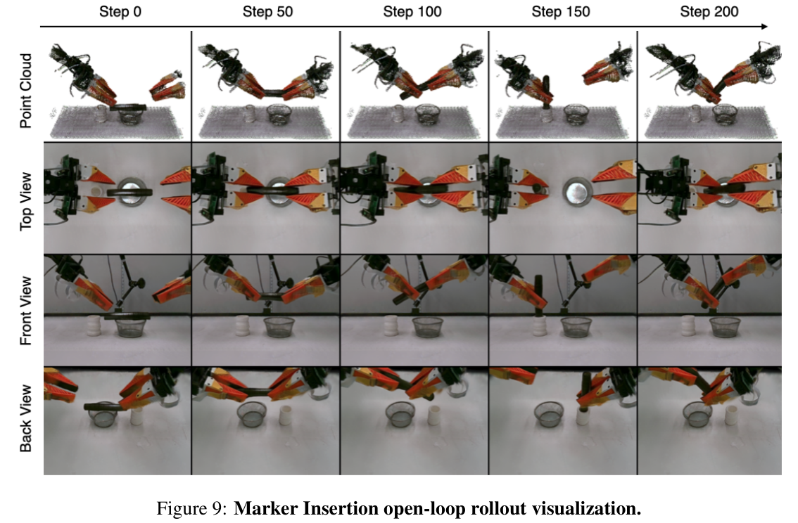
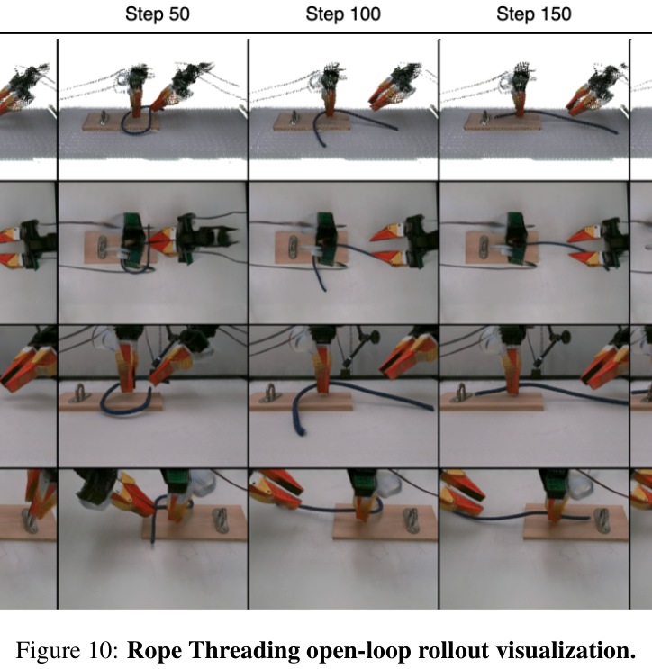
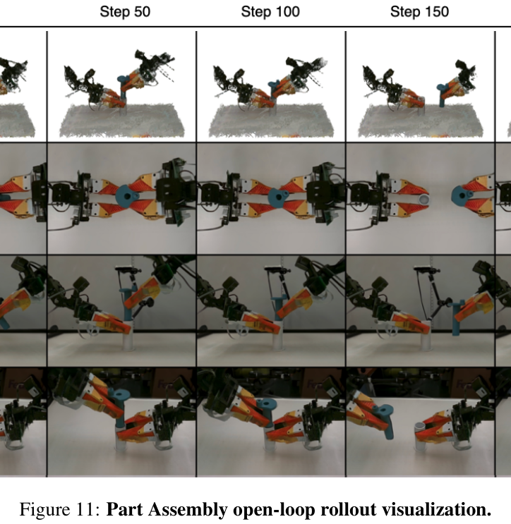
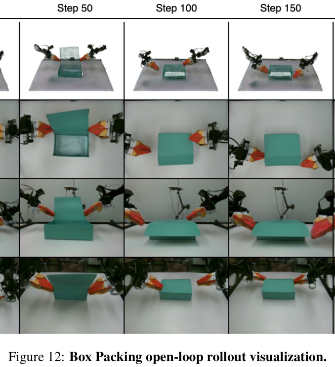
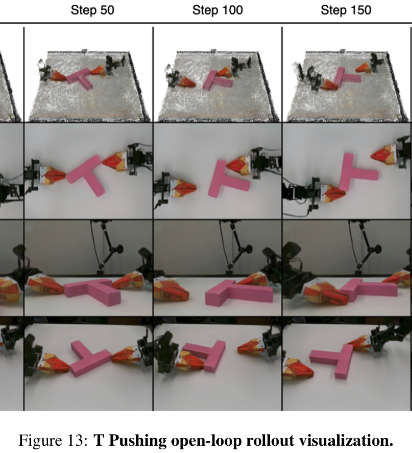
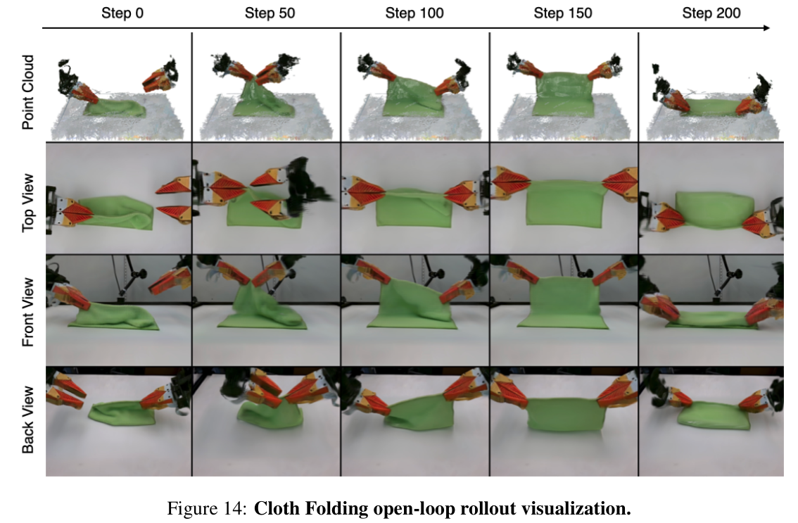
To enable Cosmos to predict depth information and allow multi-view renders, we follow guidelines and concatenate four views in one image, in addition to depth mapped into RGB space. For IWS, we enable the model to predict depth in addition to RGB, and concatenate a latent for each view in accordance to training guidelines. We follow the recipe to train Robot4DGen as it is already designed to be 3D aware and enable multi-view rendering. To train the 3D particle prediction baselines, we utilize CoTracker (Karaev et al., 2024) to obtain point tracks for each object as well as for scene points.
For evaluation, we define a success in the Assembly task to be whether the plug is successfully inserted into the socket. For cloth folding, if the edge is not grasped, that is judged to be a failure. If the edge is grasped and the mask IoU is higher than 0.6, we judge that to be a success. For T-Pushing, we define a success to be if the mask IoU is above 0.60.
Part Assembly. The policy observes only the right wrist-mounted camera, while the socket is heavily occluded in the left hand, making successful insertion dependent on both accurate wrist-camera observations and tactile feedback.
T Pushing. We utilize a novel viewpoint that was not seen during world model training. Performance is slightly lower most probably because this novel viewpoint is harder than the top down view for successful task performance, rather than the rendering.
Cloth Folding. The policy is required to slide along the cloth edge which is not visible from the front camera observation. This task shows the usage of multi-view observations.
We train ACT, Diffusion Policy (DP), \(\pi_{0.5}\), and Cosmos on Cloth Folding, Part Assembly, and T-Pushing. Each task contains 100 demonstrations recorded at 10 Hz, with 90 demonstrations used for training and 10 held out. Cloth Folding uses front and wrist-mounted camera observations, Part Assembly uses the wrist-mounted camera together with tactile observations, and T-Pushing uses a single novel camera viewpoint. Real images are color-corrected, cropped, and resized to match the corresponding simulated observations. ACT and DP use \(128\times128\) image inputs, while \(\pi_{0.5}\) and Cosmos use \(224\times224\) inputs.
For Part Assembly, tactile observations consist of four \(12\times32\) tactile pads. We apply a small deadband before normalization and use small tactile augmentation during training; Cloth Folding and T-Pushing do not use tactile inputs.
ACT and DP are trained with batch size 64 for 30,000 updates, while \(\pi_{0.5}\) uses batch size 8 and is trained for 30,000 updates. ACT predicts 30-action chunks, DP predicts 16-action horizons, and \(\pi_{0.5}\) predicts 30-action chunks. We use the optimizer and learning-rate settings listed in Table 5.
ACT uses an ImageNet-initialized ResNet-18 (He et al., 2016) visual encoder and transformer policy. DP uses a ResNet-18 visual encoder with a conditional temporal U-Net diffusion model. \(\pi_{0.5}\) is fine-tuned using LoRA (Hu et al., 2022), while Cosmos is initialized from Cosmos-Policy-ALOHA-Predict2-2B. We use standard image augmentation techniques like random color jitter, random crop and blur. We also add tactile augmentation to the Part Assembly policy by adding sparse noise, dropout, and Gaussian noise.
| ACT | DP | \(\pi_{0.5}\) | Cosmos Policy | |
|---|---|---|---|---|
| Input resolution | \(128^2\) | \(128^2\) | \(224^2\) | \(224^2\) |
| Observation history | 1 | 2 | 1 | 1 |
| Action horizon | 30 | 16 | 30 | 30 |
| Batch size | 64 | 64 | 8 | 192 |
| Learning rate | \(10^{-5}\) | \(10^{-4}\) | \(2.5\times10^{-5}\) | \(10^{-4}\) |
| Optimizer | AdamW | Adam | AdamW | AdamW |
| Training updates | 30k | 30k | 30k | 10k |
We visualize collected demonstrations for each task.
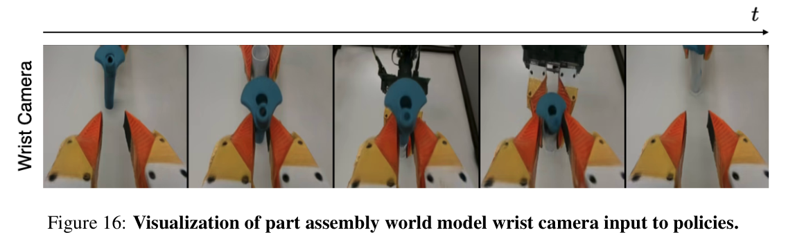
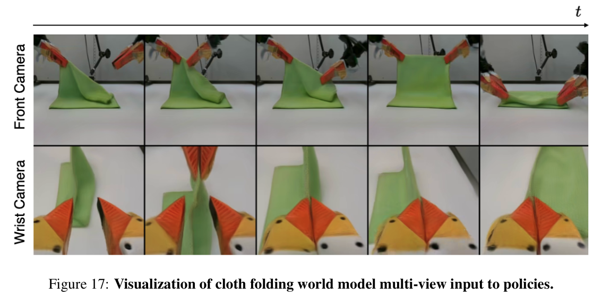
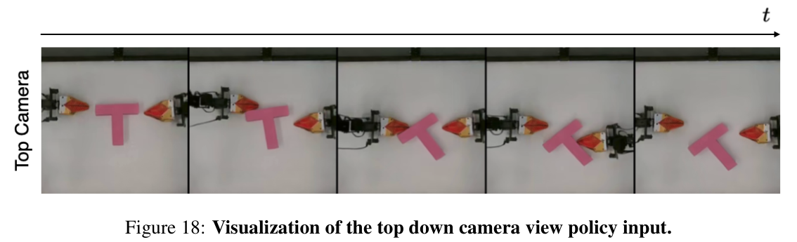